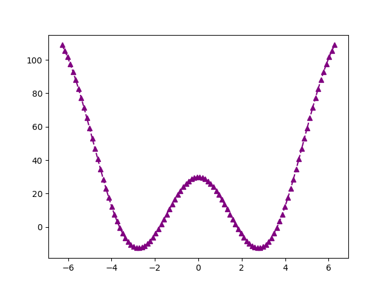

👾 programming
Last modified on April 25, 2022
Hey! These are some snippets of various languages that can be run straight out of org mode.
connected to a lot of these things is my goku (karabiner) config.
print('Hello, world!')
Hello, world!
Who am i
whoami
ketanagrawal
Rust
In rust, you can create a tuple by let tuple = (x0, x1, x2) and access them by tuple.0, tuple.1, and tuple.2. For example:
let tuple = (1, "hello"); assert_eq!(tuple.0, 1); assert_eq!(tuple.1, "hello");
Applescript
Applescript to switch the current tab from Safari => Chrome:
tell application "Safari" set theURL to URL of current tab of window 1 tell application "Google Chrome" to open location theURL end tell
Emacs Lisp
(message "Lovely %s we're having, isn't it?" (format-time-string "%A"))
Lovely Monday we’re having, isn’t it?
Python
import numpy as np def fibonacci_squares_arr(n): if n < 0: raise Exception('nope.') if n == 0: return np.array([]) if n == 1: return np.array([[n]]) else: old = fibonacci_squares_arr(n - 1) side_len = max(old.shape) nxt = np.full((side_len, side_len), n) elems = (old, nxt) if n // 2 % 2 == 0 else (nxt, old) return np.concatenate(elems, axis=int(n % 2 == 0)) def fibonacci_squares(n): arr = fibonacci_squares_arr(n) chars = list('🟥🟫🟦🟧🟨🟪🟩') fib_str = '\n'.join([''.join([ chars[(elem - 1) % len(chars)] for elem in row ]) for row in arr]) return fib_str print(fibonacci_squares(6))
🟪🟪🟪🟪🟪🟪🟪🟪🟦🟦🟧🟧🟧 🟪🟪🟪🟪🟪🟪🟪🟪🟦🟦🟧🟧🟧 🟪🟪🟪🟪🟪🟪🟪🟪🟫🟥🟧🟧🟧 🟪🟪🟪🟪🟪🟪🟪🟪🟨🟨🟨🟨🟨 🟪🟪🟪🟪🟪🟪🟪🟪🟨🟨🟨🟨🟨 🟪🟪🟪🟪🟪🟪🟪🟪🟨🟨🟨🟨🟨 🟪🟪🟪🟪🟪🟪🟪🟪🟨🟨🟨🟨🟨 🟪🟪🟪🟪🟪🟪🟪🟪🟨🟨🟨🟨🟨
y = 2
print(y)
2
Links to “👾 programming”
codex
Some cool (mostly) working examples I’ve been able to generate with OpenAI Codex so far! For context, Codex is a language model that can generate completions for programming examples, given some initial prompt. For all of these Python examples, the initial prompt is the block comment at the top, and Codex’s completion is the rest of the example.
Each of these was syntactically correct and functional with very minimal modification, most none at all. I’m sure some of these examples are partly “memorized” from the training data, but the fact that it can substitute new parameters into those memorized templates is pretty amazing.
–
Haha, this one seemed to assume that it was already December. But it was cool that it did this much by itself.
""" 1. Print the date today. 2. Print how many days until Christmas. """ import datetime now = datetime.datetime.now() print(now.strftime("%A, %B %d, %Y")) today = now.strftime("%m/%d") if today == "12/25": print("Merry Christmas!") else: print("There are " + str(25 - int(today[3:])) + " days until Christmas!")
Wednesday, September 08, 2021 There are 17 days until Christmas!
This…this is cool to be able to write math in natural language like this, and have it come to life. Wow.
""" Print the reciprocal of the Hilbert matrix. """ import numpy as np from scipy.linalg import hilbert n = 5 a = hilbert(n) b = 1.0 / a print(b)
[[1. 2. 3. 4. 5.] [2. 3. 4. 5. 6.] [3. 4. 5. 6. 7.] [4. 5. 6. 7. 8.] [5. 6. 7. 8. 9.]]
Hah, this is a cute one. I initially only put the first 4 lines in, and it proceeded to complete my pattern of stars, and even add a complementary pattern at the bottom.
""" * ** *** **** ***** """ for i in range(1,6): for j in range(i): print("*",end="") print() """ ***** **** *** ** * """ for i in range(5,0,-1): for j in range(i): print("*",end="") print()
* ** *** **** ***** ***** **** *** ** *
Whoa. This would certainly make using matplotlib a lot easier.
""" print the date in 100 days. """ from datetime import datetime, timedelta now = datetime.now() delta = timedelta(days=100) print(now + delta)
2021-12-31 12:08:53.843912

It honored my request to use requests!
""" Print the high and low temperatures for today in Stanford, California, using the requests library and the forecaster.weather.gov API. """ import requests r = requests.get('http://forecast.weather.gov/MapClick.php?lat=37.4&lon=-122.1&unit=0&lg=english&FcstType=json') data = r.json() print(data['data']['temperature'][0]) print(data['data']['temperature'][1])
87 60
compositionality (Decomposition of programs into modular, reusable unit is one example of this.)

code comments (Why do we comment our programs?)
Comments don’t change the functionality of the program, but completely changes the user experience of reading someone else’s code. It’s the difference between watching ESPN on mute and watching with the color commentator– you get all the finer points, all the thoughts, all the ramblings connected to this large body of cold, unyielding computer instructions.
For example, here’s some code from my Emacs config:
(setq org-refile-use-cache t) ;;speeds up loading refile targets (setq org-refile-targets '((nil :maxlevel . 9) ;; at most can refile 9 levels deep in the hierarchy (org-agenda-files :maxlevel . 9))) (setq org-refile-allow-creating-parent-nodes 'confirm) ;; confirm creation of new nodes as refile targets (setq org-refile-use-outline-path 'file) ;;see whole hierarchy (not just headline) when refiling (setq org-outline-path-complete-in-steps nil) ;;easy to complete in one go w/ helm
If I just had the bare config, it’d be pretty opaque what the code means in some cases (e.g., what org-refile-use-outline-path means isn’t super apparent just from the variable name) but also why I’ve set certain settings.
Programming Bottom-Up
http://www.paulgraham.com/progbot.html
There are two ways of programming in Lisp – top-down, and bottom-up.
Top-down = the classic paradigm of divide-and conquer, decomposing the problem hierarchically into smaller problems.
Bottom-up = defining your own DSL in Lisp, and using those primitives to make something cool.
Most programming is done top-down, but with the powers of macros you can go bottom-up, creating “little universes” in Lisp…
Personally what comes to mind is the rx macro in emacs. It’s like a nice little domain-specific language for writing regular expressions, embedded right into elisp.
Regexp matching a block comment in C:
(rx "/*" ; Initial /* (zero-or-more (or (not (any "*")) ; Either non-*, (seq "*" ; or * followed by (not (any "/"))))) ; non-/ (one-or-more "*") ; At least one star, "/") ; and the final /
/\*\(?:[^*]\|\*[^/]\)*\*+/
Personally, I find this to be a much more beautiful (and still somewhat succinct) way of writing regexes than the normal regex syntax.
you redefine the language itself to have the primitives you want it to have, and then you can proceed to build something (perhaps in top-down fashion now.) It’s like “meeting in the middle,” so you don’t have to build up super complex primitives, and you don’t have to decompose down to a super fine-grained level.
I wonder what the connection between this bottom-up paradigm and Bret Victor - The Future of Programming is. I feel like maybe there’s an idea that his visual programming playgrounds are like a domain-specific language (albeit not in Lisp.) They give the user a powerful set of primitives to manipulate digital objects, and the user can then build from there to make it come to life.
Also feel like emacs encourages bottom-up programming in some ways, well ofc because of Lisp, but also because of the interactivity of the environment. You write a snippet, and immediately you can evaluate that code and test out your snippet. You get a couple more snippets, try those out, and then it’s like, ok cool, what else can I build with these snippets?